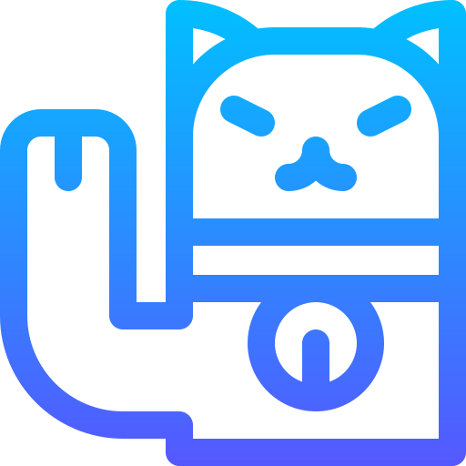
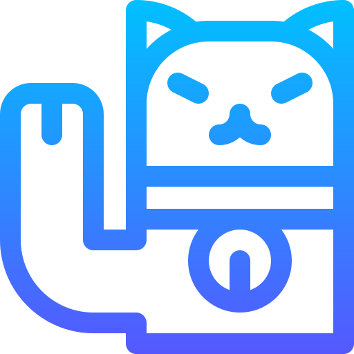

Mein Schmetterling
Mariposa hermosa, Schmetterling le digo yo, le digo Schmetterling porque está escrita en alemán
y el alemán es muy lógico entonces creo que la lógica es que mi amor por ti surgió, cuando
admiramos todo, mi bella Schmetterling. Te acuerdas de la casa de colibríes y de los paisajes llenos
de verde, te acuerdas de todo lo que surgimos desde el sol y la mañana hasta la noche y cuando
llueve. Schmetterling, es un placer disfrutar de tu existencia, aunque en mi vida haya sido tan
corta. Tu transformación, tu metamorfosis ahí no para, como la mía tampoco. Quién diría que el
cucarrón con una mariposa conviviría, el cucarrón que, aunque sabe volar del suelo no pasa, pero
con la mariposa aprendió a conocer con lo que los pies no se alcanzan. Hoy dejo de ser cucarrón
para convertirme en pájaro. Para convertirme en halcón exactamente, tengo que ser solitario y
volar libremente. Y tu mariposa bella, mein bunter Schmetterling, mi color de mundos, mi
compañía más preciada, hoy te dejo. ¿Te dejo sabes por qué? Porque ya es hora de que vueles
más alto y que te conviertas en hada. Me dijiste un día que yo era tu Schutzengel y eso por nada
del mundo cambia. Ni nuestro amor morirá, ni tu caerás, ni yo caeré, ni caeremos, solo seguiremos
moviéndonos como dos partículas que una vez fueron uno, yo con tus alas tu con las mías siempre
recorreremos nuevos caminos. Mein Schmetterling yo se que es lo que pasa, discúlpame ya no
puedo verte el rostro porque mi ceguera avanza. Pero te recuerdo como la más hermosa de las
mariposas, la más perfecta con alas rotas, la mas colorida aparentemente peligrosa, pero tierna
más que lo más tierno con mirada de perla preciosa.
 
